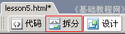
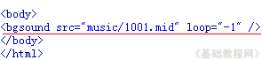

Dreamweaver 8 基础入门教程
五、背景音乐 返回
（注意：按ESC键停止音乐的播放，点刷新重新播放）
这一节我们来学习如何设置背景音乐，放一首音乐在网页中，往往能给人带来另外的心情，下面我们来看一个练习；
1、启动Dreamweaver
1）点击“开始－所有程序－Macromedia－Macromedia Dreamweaver 8”， ；
；
2）在中间的“创建新项目”中点第一个 HTML，打开一个空白文档，把标题改为“背景音乐”；

3）点“文件－保存”命令，以 yinyue 为文件名保存文件，保存位置在建立的站点中；
4）在右面侧边栏的站点中，新建一个文件夹，名称为 music 用来存放音乐，找到一首喜欢的歌曲，把它拖到这个文件夹里面；
本课images文件夹中有一首1001.mid文件可以作为练习；
2、插入背景音乐
1）在标签下面的“文档”工具栏中点一下“拆分”标签，窗口分成两部分，上边是代码，下边是文档；

2）在上面的代码窗口中，找到<body>标签，在它后面点一下鼠标，然后按一下回车键插入一个空行，
3）切换到英文输入法状态，输入 <bgsound src="music/1001.mid" loop="-1" />

输入的时候会有提示，里面的单词是代码标签，双引号里面是参数值，-1表示循环播放；
在文件名的标签上敲右键选保存命令，保存一下文件，点预览按钮，听一下背景音乐的播放，
停止音乐可以按ESC键或点浏览器工具栏上的停止按钮，点刷新重新播放；
本节学习了插入背景音乐的基本方法，学习了使用代码窗口的方法，如果你成功地理解并完成了练习，请继续学习下一课内容；
本教程由86团学校TeliuTe制作|著作权所有
基础教程网：http://teliute.org/
美丽的校园……
转载和引用本站内容，请保留版权信息和本站链接。